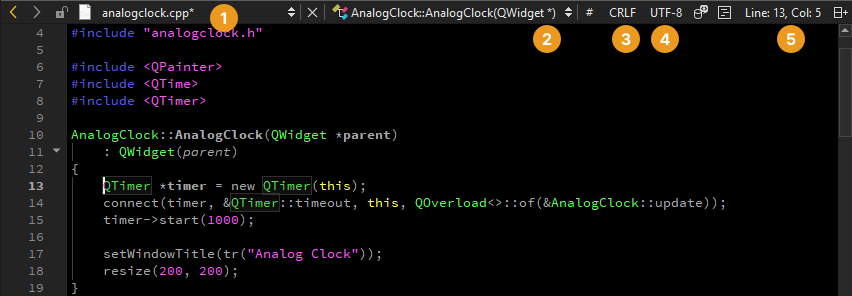

Edit Mode
Write and navigate code in the Edit mode.

Editing Code
The Qt Creator code editor offers code editing services, such as:
- Semantic highlighting
Qt Creator helps you to write well formatted code by highlighting code elements and blocks. You can use syntax highlighting also for other types of files than C++ or QML.
- Checking code syntax
Qt Creator checks for errors when you write code and displays inline error and warning messages. Similarly, it checks the data structure of an instance of a JavaScript object notation (JSON) entity. Run static checks on the QML and JavaScript code in your project to find common problems.
- Code completion
Qt Creator anticipates what you are going to write and completes code and code snippets for elements, properties, and IDs.
- Indenting text or code
Qt Creator indents text and code according to rules that you specify separately for files that have C++, QML, or Nim (experimental) code and for other text files.
Navigating Code
Split the editor view to work on several files simultaneously and move between files and symbols in the following ways:
- Locate them with the locator.
- Use the views in the sidebar.
- Go to the Edit and Window menu.
- Use keyboard shortcuts.
- Bookmark code.
- Select buttons on the editor toolbar.
Editor Toolbar
The editor toolbar is context sensitive and shows items relevant to the file currently open in the editor.

Editor toolbar when a C++ source file is open
Editor toolbar when a QML file is open
| Button or Field | Purpose | Read More |
|---|---|---|
  | Browse backward or forward through your location history. | |
| Shows the currently open file. | Move between files | |
| Shows the current symbol. | Move to symbols | |
| # | Change the active parse context. | Parse files |
 | Switch between Windows line endings (CRLF) and Unix line endings (LF). | Select line ending style |
 | Change the text encoding. | Change text encoding |
| View the language server for the current project, restart it, select another one, inspect the communication between Qt Creator and language servers, view server capabilities, and set language server preferences. | Language Servers | |
| Preview changes to QML code live in your application. | Previewing on Desktop | |
 | Run Clang-Tidy or Clazy to analyze the currently open file. | Analyze code with Clang-Tidy and Clazy |
| Jump to a line and column in the current file. The line and column indicator shows information about the current cursor positions, including the length of the selection for selected text. |
Adding Space Around Toolbar Items
To add more space around the toolbar items, go to Preferences > Environment > Interface, and then select Relaxed in the Toolbar style field.

Resizing Views
To resize the editor views and splits, move the cursor to the edge of the view or split. When the cursor changes, drag the edge of the view or split to another position.
If the cursor does not change, go to Preferences > Environment > Interface and select Override cursors for views.
Copying File Information
To open a context menu that has commands for managing open files, right-click the file name or icon on the toolbar (1). It has the same commands as the File menu, as well as commands that copy the path and name of the current file and the number of the line where the cursor is currently located to the clipboard: Copy Full Path, Copy File Name, and Copy Path and Line Number.
Editing Selected Lines
In the Edit mode, go to Edit > Advanced to edit lines of text that you select in the editor:
- To duplicate the selected lines, go to Duplicate Selection.
- To format the duplicated lines as a comment, go to Duplicate Selection and Comment.
- To turn selected text into lowercase, go to Lowercase Selection or press Alt+U.
- To turn selected text into uppercase, go to Uppercase Selection or press Alt+Shift+U.
- To sort selected lines alphabetically, go to Sort Selected Lines or press Alt+Shift+S.
- To add a cursor at the next occurrence of selected text for multi-cursor editing, go to Add Next Occurrence to Selection or press Ctrl+D
See also How To: Edit Code, How To: Manage Language Servers, Navigate with locator, Keyboard Shortcuts, and Sidebar Views.